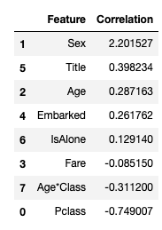

[Kaggle] titanic 모델, 예측, 해결
모델, 예측, 해결
이제 우리는 모델을 훈련시키고 필요한 해결책을 예측할 준비가 되었다.
우리가 선택할 수 있는 60개 이상의 예측 모델링 알고리즘이 있다. 우리는 우리가 평가할 수 있는 선택된 몇 개의 모델로 좁혀지는 문제와 해결 요건의 유형을 이해해야 한다.
우리의 문제는 분류와 회귀 문제다.
출력(생존여부)과 다른 변수나 특징(성인, 연령, 포트…)과의 관계를 파악하고자 한다. 우리는 또한 주어진 데이터셋으로 우리의 모델을 훈련시키기 때문에 감독된 학습이라고 불리는 기계 학습의 범주를 수행하고 있다.
우리가 지도 학습 - 분류 에서 사용할 수 있는 모델들은 다음과 같다.
- Logistic Regression - 로지스틱스 회기
- KNN or k-Nearest Neighbors - 최근접 알고리즘
- Support Vector Machines - 서포트 벡터 머신
- Naive Bayes classifier - 나이브 베이즈
- Decision Tree - 결정 트리
- Random Forrest - 랜덤 포레스트 (결정 트리가 모여 구성)
- Perceptron - 인공 신경망 모형 이진 분류 모델(linear classifier)
- Artificial neural network - 인공 신경망
- RVM or Relevance Vector Machine
데이터 준비
학습 데이터와 테스트 데이터를 특성과 라벨 데이터로 분리한다.
X_train = train_df.drop("Survived", axis=1)
Y_train = train_df["Survived"]
X_test = test_df.drop("PassengerId", axis=1).copy()
X_train.shape, Y_train.shape, X_test.shape
======
((891, 8), (891,), (418, 8))
로지스틱 회귀 분석은 워크플로우의 초기에 실행하기 위한 유용한 모델이다.
로지스틱 회귀 분석은 누적 로지스틱 분포인 로지스틱 함수를 사용하여, 확률 추정을 통해 범주형 종속 변수(기능)와 하나 이상의 독립 변수(기능) 사이의 관계를 측정한다.
logreg = LogisticRegression()
logreg.fit(X_train, Y_train)
Y_pred = logreg.predict(X_test)
acc_log = round(logreg.score(X_train, Y_train) * 100, 2)
acc_log
========
80.36
우리가 만든 모델의 정확도는 80.36으로 로지스틱 회귀 분석을 사용하여 가정과 결정을 검증할 수 있다.
우리가 가공한 특성과 라벨의 상관 관계를 확인해보자. 양의 계수는 반응 노드를 증가시키고(따라서 확률을 증가) 음의 계수를 가지면 반응 노드를 감소시킨다.(따라서 확률을 감소)
coeff_df = pd.DataFrame(train_df.columns.delete(0))
coeff_df.columns = ['Feature']
coeff_df["Correlation"] = pd.Series(logreg.coef_[0])
coeff_df.sort_values(by='Correlation', ascending=False)

- 성별은 양위계수가 가장 높은 것으로, 성별값이 상승(남성:0~여성:1)될수록 생존 확률이 높아진다. (여성일수록 생존 확률이 높다)
- 반대로 Pclass가 증가하면 생존확률이 가장 많이 감소한다.
- 이런 방식으로 age * class 는 생존확률과 음의 상관관계가 두 번째로 높기 때문에 모델링하기에 좋은 특성이다.
- 두 번째로 높은 양의 상관관계인 Title도 마찬가지다.
다음으로 우리는 지도학습에서 Support Vector Machines 알고리즘을 사용해 모델링한다.
각각 2개 범주의 하나 또는 다른 범주에 속하는 것으로 표시된 일련의 훈련 샘플에 대해, SVM 훈련 알고리즘은 새로운 테스트 샘플을 한 범주 또는 다른 범주에 할당하는 모델을 구축하여 확률론적 이진 선형 분류기가 된다.
svc = SVC()
svc.fit(X_train, Y_train)
Y_pred = svc.predict(X_test)
acc_svc = round(svc.score(X_train, Y_train) * 100, 2)
acc_svc
=====
83.84
패턴 인식에서 k-Nearest Neighbors 알고리즘(또는 줄여서 k-NN)은 분류 및 회귀 분석에 사용되는 비모수 방법이다.
표본은 이웃의 과반수 투표에 의해 분류되며, 표본은 가장 가까운 k 이웃들 사이에서 가장 일반적인 등급에 할당된다(k는 양의 정수, 일반적으로 작다). k = 1인 경우, 개체는 가장 가까운 단일 이웃의 클래스에 간단히 할당된다.
knn = KNeighborsClassifier(n_neighbors = 3)
knn.fit(X_train, Y_train)
Y_pred = knn.predict(X_test)
acc_knn = round(knn.score(X_train, Y_train) * 100, 2)
acc_knn
====
84.74
기계학습에서 naive Bayes classifiers는 특성들 사이에 강한 (생존적) 독립적 가정을 가진 베이즈의 정리를 적용한 것에 기초한 단순한 확률론적 분류자의 계열이다. Naive Bayes 분류기는 확장성이 뛰어나, 학습 문제의 변수 수(기능)에 선형적인 다수의 매개변수가 필요하다.
# Gaussian Naive Bayes
gaussian = GaussianNB()
gaussian.fit(X_train, Y_train)
Y_pred = gaussian.predict(X_test)
acc_gaussian = round(gaussian.score(X_train, Y_train) * 100, 2)
acc_gaussian
=====
72.28
perceptron 은 이진 분류기의 지도 학습을 위한 알고리즘이다. (숫자 벡터로 대표되는 입력이 어떤 특정 클래스에 속하는지 아닌지를 결정할 수 있는 기능). 그것은 선형 분류기의 일종으로, 즉 형상 벡터와 가중치 집합을 결합한 선형 예측기 함수에 기초해 예측을 하는 분류 알고리즘이다. 알고리즘은 한 번에 하나씩 훈련의 요소를 처리한다는 점에서 온라인 학습을 허용한다.
# Perceptron
perceptron = Perceptron()
perceptron.fit(X_train, Y_train)
Y_pred = perceptron.predict(X_test)
acc_perceptron = round(perceptron.score(X_train, Y_train) * 100, 2)
acc_perceptron
=====
78.0
# Linear SVC
linear_svc = LinearSVC()
linear_svc.fit(X_train, Y_train)
Y_pred = linear_svc.predict(X_test)
acc_linear_svc = round(linear_svc.score(X_train, Y_train) * 100, 2)
acc_linear_svc
=========
79.01
# Stochastic Gradient Descent
sgd = SGDClassifier()
sgd.fit(X_train, Y_train)
Y_pred = sgd.predict(X_test)
acc_sgd = round(sgd.score(X_train, Y_train) * 100, 2)
acc_sgd
========
74.3
의사 결정 트리 모델은 대상 값이 가질 수 있는 타겟에 대해 매핑하는 용도로 사용한다. 대상 변수가 유한한 값 집합을 취할 수 있는 트리 모델을 분류 트리라고 한다. 이러한 트리 구조에서 잎은 클래스 라벨을 나타내고 가지는 해당 클래스 라벨을 유도하는 형상의 결합을 나타낸다. 대상 변수가 연속적인 값(일반적으로 실제 숫자)을 취할 수 있는 의사결정 트리를 회귀 트리라고 한다.
# Decision Tree
decision_tree = DecisionTreeClassifier()
decision_tree.fit(X_train, Y_train)
Y_pred = decision_tree.predict(X_test)
acc_decision_tree = round(decision_tree.score(X_train, Y_train) * 100, 2)
acc_decision_tree
===
86.76
다음 모델인 랜덤 포레스트는 가장 인기 있는 모델 중 하나이다. 랜덤 포리스트 또는 랜덤 디시젼 포리스트는 분류, 회귀 및 기타 작업을 위한 앙상블 학습 방법으로, 훈련 시간에 다수의 디시젼 트리(n_estimators=100)를 구성하고 개별 트리의 클래스(분류) 또는 평균 예측(회귀)의 모드인 클래스를 출력하여 운영된다.
# Random Forest
random_forest = RandomForestClassifier(n_estimators=100)
random_forest.fit(X_train, Y_train)
Y_pred = random_forest.predict(X_test)
random_forest.score(X_train, Y_train)
acc_random_forest = round(random_forest.score(X_train, Y_train) * 100, 2)
acc_random_forest
======
86.76
Model evaluation
우리는 이제 우리의 문제에 가장 적합한 모델을 선택하기 위해 모든 모델에 대한 평가를 순위를 매길 수 있다. 의사결정 트리와 랜덤 포레스트 모두 같은 점수를 받지만, 우리는 랜덤 포레스트가 그들의 훈련 세트에 과도하게 적응하는 의사결정 트리의 습성을 교정하기 때문에 랜덤 포리스트를 사용하는 것을 선택한다.

# 제출을 위해 파일 생성
submission = pd.DataFrame({
"PassengerId": test_df["PassengerId"],
"Survived": Y_pred
})
# submission.to_csv('../output/submission.csv', index=False)